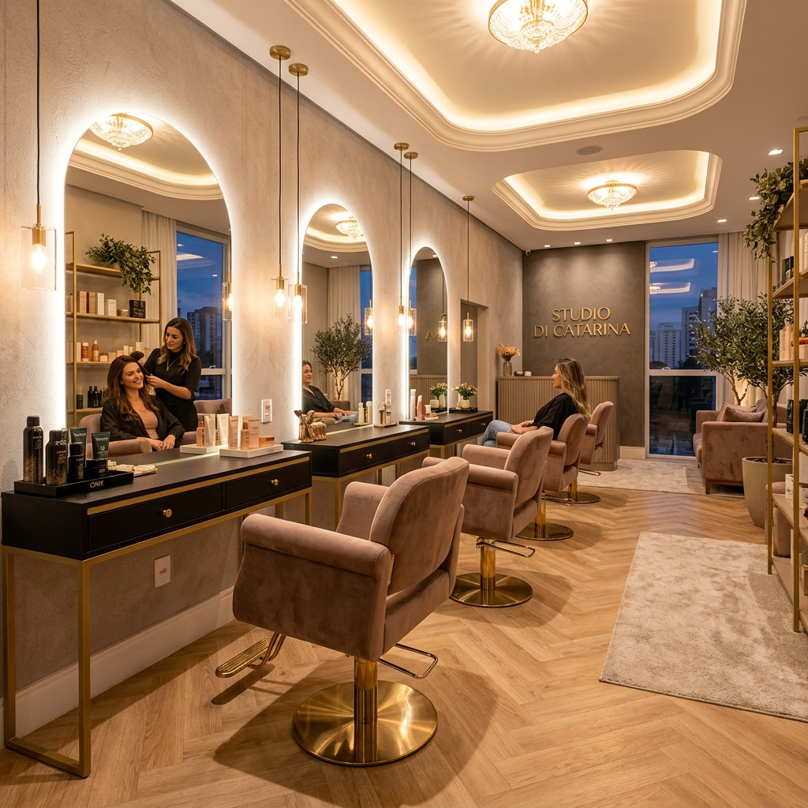
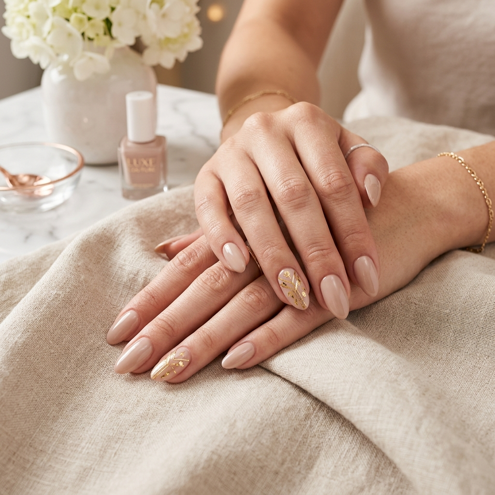
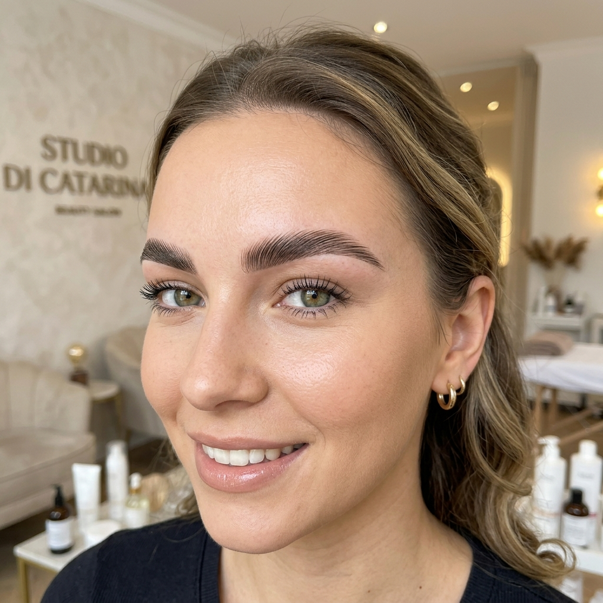

Referência em Cabelo (Mechas & Morena Iluminada), alongamento de Unhas em Gel e design de Sobrancelhas em Barueri. Atendimento exclusivo no Parque Imperial.
Localizado no Parque Imperial em Barueri, o Studio Di Catarina une sofisticação, produtos de alta cosmética e um atendimento caloroso para realçar sua autoestima.
R. Frei Henrique Soares de Coimbra, 251 - Parque Imperial
Barueri - SP, 06462-190
Atendemos clientes de Barueri, Parque Imperial, Alphaville, Tamboré e região com excelência e horários flexíveis.
Escolha o serviço desejado e consulte disponibilidade de horário no WhatsApp.
Técnica exclusiva de iluminação capilar com proteção dos fios e efeito natural deslumbrante em Barueri.
Corte personalizado para valorizar seu formato de rosto, acompanhado de reconstrução e nutrição intensa.

Unhas resistentes, elegantes e com acabamento ultra natural. Diversas opções de formatos e Nail Art.
Brilho intenso por até 20 dias sem descascar. Cuidado completo para mãos e pés com material esterilizado.

Mapeamento facial para harmonia visual do seu olhar. Aplicação de Henna natural de longa duração.
Alinhamento dos fios da sobrancelha e cílios curvados naturally para um olhar marcante e moderno.
Tire suas dúvidas sobre localização, agendamentos e procedimentos no Studio Di Catarina.
O Studio Di Catarina fica localizado na Rua Frei Henrique Soares de Coimbra, 251 - Parque Imperial, Barueri - SP, CEP 06462-190. Próximo a Alphaville e fácil acesso por Waze ou Uber.
Oferecemos cuidados completos em 3 especialidades: Cabelos (Mechas, Morena Iluminada, Corte, Hidratação), Unhas (Alongamento em Gel, Fibra de Vidro, Esmaltação em Gel, Manicure) e Sobrancelhas (Design Personalizado, Henna, Brow Lamination, Lash Lift).
Basta clicar em qualquer botão "Agendar no WhatsApp" do site ou enviar uma mensagem direta para o número (11) 91061-8237 com o serviço e dia de sua preferência.
No nosso site oficial disponibilizamos botões diretos para abrir a rota no Waze, solicitar corrida no Uber, 99 ou abrir no Google Maps com o endereço pré-selecionado.
Terça a Sábado: 09h às 19h (Com agendamento)
Escolha o serviço desejado para iniciar a confirmação no WhatsApp: